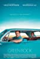
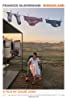
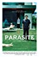
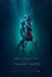
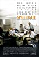
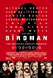
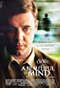
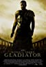
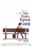

Green Book (2018)
 8,2
8,2
12
130 min
Biography, Drama, Comedy

A working-class Italian-American bouncer becomes the driver
of an African-American classical pianist on a tour of venues
through the 1960s American South.
Director: Peter Farrelly
Stars: Viggo Mortensen, Mahershala Ali, Linda Cardellini, Sebastian Maniscalco
Nomadland (2020)
7,3
12
107 min
Drama

A woman in her sixties, after losing everything in the
Great Recession, embarks on a journey through the
American West, living as a van-dwelling modern-day nomad.
Director: Chloé Zhao
Stars: Frances McDormand, David Strathairn, Linda May, Gay DeForest
Parasite (2019)
8,5
16
132 min
Horror, Drama, Comedy

Greed and class discrimination threaten the newly formed
symbiotic relationship between the wealthy Park family and
the destitute Kim clan.
Director: Bong Joon Ho
Stars: Kang-ho Song, Sun-kyun Lee, Yeo-jeong Cho, Choi Woo-sik
The Shape of Water (2017)
7,3
R
123 min
Drama, Fantasy, Romance

At a top secret research facility in the 1960s, a lonely
janitor forms a unique relationship with an amphibious
creature that is being held in captivity.
Director: Guillermo del Toro
Stars: Sally Hawkins, Octavia Spencer, Michael Shannon, Doug Jones
Moonlight (2016)
7,4
R
111 min
Drama
A young African-American man grapples with his identity
and sexuality while experiencing the everyday struggles
of childhood, adolescence, and burgeoning adulthood.
Director: Barry Jenkins
Stars: Mahershala Ali, Naomie Harris, Trevante Rhodes, Alex R. Hibbert
Spotlight (2015)
8,1
R
129 min
Biography, Drama, Crime

The true story of how the Boston Globe uncovered the
massive scandal of child molestation and cover-up
within the local Catholic Archdiocese, shaking the
entire Catholic Church to its core.
Director: Tom McCarthy
Stars: Mark Ruffalo, Michael Keaton, Rachel McAdams, Liev Schreiber
Birdman (2014)
7,7
R
119 min
Drama, Comedy

washed-up superhero actor attempts to revive his
fading career by writing, directing, and starring
in a Broadway production.
Director: Alejandro G. Iñárritu
Stars: Michael Keaton, Zach Galifianakis, Edward Norton, Andrea Riseborough
The Lord of the Rings: The Return of the King (2003)
9,0
PG-13
201 min
Action, Adventure, Drama
 Gandalf and Aragorn lead the World of Men against
Sauron's army to draw his gaze from Frodo and Sam
as they approach Mount Doom with the One Ring.
Gandalf and Aragorn lead the World of Men against
Sauron's army to draw his gaze from Frodo and Sam
as they approach Mount Doom with the One Ring.
Director: Peter Jackson
Stars: Elijah Wood, Viggo Mortensen, Ian McKellen, Orlando Bloom
A Beautiful Mind (2001)
8,2
PG-13
135 min
Biography, Drama

After John Nash, a brilliant but asocial mathematician,
accepts secret work in cryptography, his life takes a
turn for the nightmarish.
Director: Ron Howard
Stars: Russell Crowe, Ed Harris, Jennifer Connelly, Christopher Plummer
Gladiator (2000)
8,5
R
155 min
Action, Drama, Adventure

A former Roman General sets out to exact vengeance
against the corrupt emperor who murdered his family
and sent him into slavery.
Director: Ridley Scott
Stars: Russell Crowe, Joaquin Phoenix, Connie Nielsen, Oliver Reed
Forrest Gump (1994)
8,8
PG-13
142 min
Drama, Romance

The presidencies of Kennedy and Johnson, the Vietnam War,
the Watergate scandal and other historical events unfold
from the perspective of an Alabama man with an IQ of 75,
whose only desire is to be reunited with his childhood
sweetheart.
Director: Robert Zemeckis
Stars: Tom Hanks, Robin Wright, Gary Sinise, Sally Field